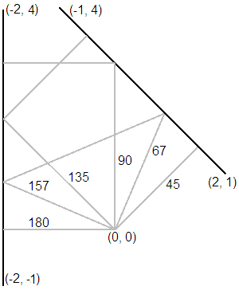
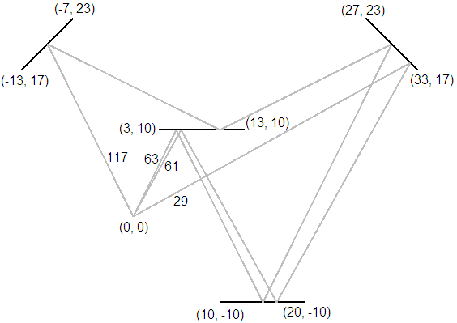

| Source file: | laser.{c, cpp, java} |
| Input file: | laser.in |
A Laser Tag environment is set up with a number of upright, rectangular, double-sided mirrors, all reaching high over head. These mirrors can reflect your laser beam, allowing you multiple ways to shoot your opponents. Unfortunately, they can also reflect your laser beam in such a way that it hits you by mistake. Your job is to calculate the angles that result in shooting yourself (so that you can avoid them).
The mirrors are not perfectly reflective, so we only need to worry about shots with at most 7 reflections. Below are several possible setups. In the figures the views are looking down from above. The mirrors are shown as black segments. All the paths that lead back to the firing point are shown in gray. Take the point of firing as the center of a Cartesian coordinate system, with postive x to the right and positive y up the page. The coordinates of the origin and the ends of the mirrors are shown. For simplicity assume the mirrors have negligible thickness. Each path is labeled with the initial firing angle, measured in degrees counterclockwise from the postive x axis and rounded to the nearest degree, 0 through 359.
|  |
 |
| Figures |
|
Input: The input contains one or more data sets. Each
data starts with a line containing the number of mirrors, n, 1 ≤ n ≤ 7.
The next n lines each contain the (x, y) coordinates of the ends of one mirror,
so there is a sequence of 4 numbers for each mirror, x1 y1 x2 y2. All
coordinates are integers with magnitude less than 1000. No mirrors
intersect or touch. No mirror passes through the origin.
After the last dataset is a line containing only 0.
Output: For each data set output a single line. If there are one or more paths back to the origin with no more than 7 reflections, collect the starting angles rounded to the nearest degree. All rounded angles, a, should be normalized so 0 ≤ a ≤ 359. Eliminate any duplicates and print the integers out in increasing order on one line, using a single blank as separator. If there is no such path back, output "no danger". No path will hit the exact edge of a mirror. No line of output will have more than 79 characters. Please note that although the output is rounded to the nearest angle, your internal computations should be based on double-precision floating-point computations.
The first two example data sets correspond to the Figures, and the third merely omits the bottom mirror from the second data set.
| Example Input: | Example Output: |
|
2 2 1 -1 4 -2 4 -2 -1 4 3 10 13 10 -13 17 -7 23 33 17 27 23 10 -10 20 -10 3 3 10 13 10 -13 17 -7 23 33 17 27 23 0 |
45 67 90 135 157 180 29 61 63 117 no danger |